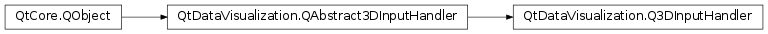

QtDataVisualization.Q3DInputHandler¶
Inherited by: QtDataVisualization.QTouch3DInputHandler
Synopsis¶
Functions¶
- def
isRotationEnabled() - def
isSelectionEnabled() - def
isZoomAtTargetEnabled() - def
isZoomEnabled() - def
setRotationEnabled(enable) - def
setSelectionEnabled(enable) - def
setZoomAtTargetEnabled(enable) - def
setZoomEnabled(enable)
Signals¶
- def
rotationEnabledChanged(enable) - def
selectionEnabledChanged(enable) - def
zoomAtTargetEnabledChanged(enable) - def
zoomEnabledChanged(enable)
Detailed Description¶
-
class
PySide2.QtDataVisualization.QtDataVisualization.Q3DInputHandler([parent=nullptr])¶ Parameters: parent – PySide2.QtCore.QObject
-
PySide2.QtDataVisualization.QtDataVisualization.Q3DInputHandler.isRotationEnabled()¶ Return type: PySide2.QtCore.bool
-
PySide2.QtDataVisualization.QtDataVisualization.Q3DInputHandler.isSelectionEnabled()¶ Return type: PySide2.QtCore.bool
-
PySide2.QtDataVisualization.QtDataVisualization.Q3DInputHandler.isZoomAtTargetEnabled()¶ Return type: PySide2.QtCore.bool
-
PySide2.QtDataVisualization.QtDataVisualization.Q3DInputHandler.isZoomEnabled()¶ Return type: PySide2.QtCore.bool
-
PySide2.QtDataVisualization.QtDataVisualization.Q3DInputHandler.rotationEnabledChanged(enable)¶ Parameters: enable – PySide2.QtCore.bool
-
PySide2.QtDataVisualization.QtDataVisualization.Q3DInputHandler.selectionEnabledChanged(enable)¶ Parameters: enable – PySide2.QtCore.bool
-
PySide2.QtDataVisualization.QtDataVisualization.Q3DInputHandler.setRotationEnabled(enable)¶ Parameters: enable – PySide2.QtCore.bool
-
PySide2.QtDataVisualization.QtDataVisualization.Q3DInputHandler.setSelectionEnabled(enable)¶ Parameters: enable – PySide2.QtCore.bool
-
PySide2.QtDataVisualization.QtDataVisualization.Q3DInputHandler.setZoomAtTargetEnabled(enable)¶ Parameters: enable – PySide2.QtCore.bool
-
PySide2.QtDataVisualization.QtDataVisualization.Q3DInputHandler.setZoomEnabled(enable)¶ Parameters: enable – PySide2.QtCore.bool
-
PySide2.QtDataVisualization.QtDataVisualization.Q3DInputHandler.zoomAtTargetEnabledChanged(enable)¶ Parameters: enable – PySide2.QtCore.bool
-
PySide2.QtDataVisualization.QtDataVisualization.Q3DInputHandler.zoomEnabledChanged(enable)¶ Parameters: enable – PySide2.QtCore.bool
© 2018 The Qt Company Ltd. Documentation contributions included herein are the copyrights of their respective owners. The documentation provided herein is licensed under the terms of the GNU Free Documentation License version 1.3 as published by the Free Software Foundation. Qt and respective logos are trademarks of The Qt Company Ltd. in Finland and/or other countries worldwide. All other trademarks are property of their respective owners.